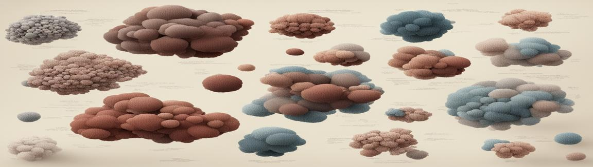

Data Dimensionality Reduction
When implementing machine learning algorithms, the inclusion of more features might lead to worsening performance issues. Increasing the number of features will not always improve classification accuracy, which is also known as the curse of dimensionality. Hence, we apply dimensionality reduction to improve classification accuracy by selecting the optimal set of lower dimensionality features. I have selected a Wine dataset, available at Sklearn to show some techniques of dimensionality reduction.
Feature Selection and Correlation Matrix
The correlation matrix is the first step in dimensionality reduction because it gives an idea of the number of features that strongly relate. If two features strongly correlate between each other, it is likely that one of them can be dropped without negatively affecting the ML model.
Every feature with a correlation above 0.7 are considered strongly correlated features. For example:In this case, if I needed to perform a dimensionality reduction I could keep only Flavanoids and drop the other two. I will keep them for now cause I want to show some other graphs.
Spotting Good Features
Imagining you want to train a model to differentiate bewteen labels from classes 1, 2, 3. With the pair plot below you can spot how good each feature is for each of these clusters.
Some features separate quite well the classes. For example, Proline seems to be a quite explicative variable itself, especially for wine 0 (blue dots). Also color intensity, coupled with total phenols or flavanoids separates quite well the classes.Principal Component Analysis (PCA)
Principal component analysis, or PCA, is a statistical procedure that allows you to summarize the information content in large data tables by means of a smaller set of “summary indices” that can be more easily visualized and analyzed. It is a common strategy to approach to reduce data dimensionality, which in some cases help to improve the performance of Machine/Deep Learning Algorithms. PCA can be performed using Python, as demonstrated below.
Analysing the results of PCA, we can conclude that:Comparing SVC with PCA and Normal Dataset
The best model with the complete dataset had an score of 0.976, while the best model with the PCA features had a performance of 0.968, however, as the number of features is smaller it is less likely that the PCA model is overfitted.